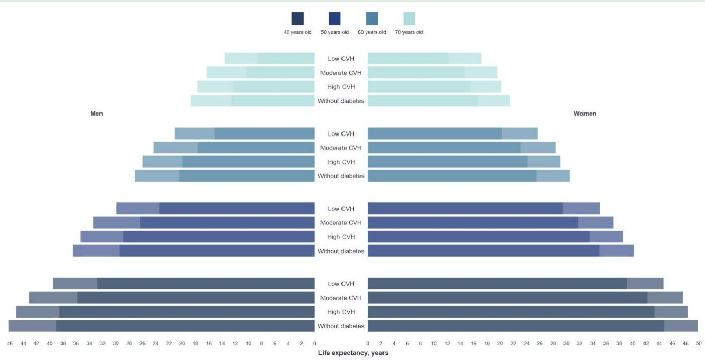

Cardiovascular Aging
Studies cardiovascular disease progression, valvular heart disease, aortic stenosis, and disease-free life expectancy in aging populations.
Cardiovascular Epidemiology | Causal Inference | UK Biobank
Utilizing large-scale cohorts, genetic evidence, and biomarker data to study the etiology of cardiovascular and chronic diseases.
Proven expertise in synthesizing longitudinal, genetic, and biomarker data to dissect disease mechanisms with survival analysis, multistate models, and causal inference. A warm, reliable collaborator who communicates clearly across clinical, statistical, and engineering teams, and quickly adopts new analytical and AI-assisted research workflows.
Actively seeking Postdoctoral Fellowship or related research scientist opportunities. Interested PIs and collaborators are warmly welcome to get in touch.
Research Focus
Studies cardiovascular disease progression, valvular heart disease, aortic stenosis, and disease-free life expectancy in aging populations.
Builds reproducible R and Python pipelines for phenotypic and genotypic data extraction, cleaning, quality control, and analysis.
Uses survival analysis, multistate models, Mendelian randomization, propensity scores, GLMM, and SEM to evaluate mechanisms and interventions.
Flagship Projects
BMC Medicine | Valvular Heart Disease
Quantified how modifiable lifestyle factors relate to VHD onset, mortality, and life expectancy across socioeconomic groups.

Can healthier lifestyle slow the transition from no VHD to incident VHD and death, including among older adults with lower socioeconomic status?
UK Biobank EHR-linked cohort; five-factor lifestyle score covering smoking, obesity, physical activity, diet, and sleep; Townsend-based SES stratification; three-state Gompertz multistate models; transition-specific HRs, interaction testing, weighted life tables, and sensitivity analyses by CVH metric, AS/MR subtype, SES definition, early events, and imputed covariates.
Ideal lifestyle was consistently associated with lower VHD incidence and lower mortality transitions, with clinically readable gains of about 4-5 additional life years across socioeconomic strata.
Shows that prevention evidence can be translated into life-expectancy terms clinicians and public health teams can communicate clearly.
European Journal of Preventive Cardiology | Type 2 Diabetes
Estimated whether higher Life's Essential 8 cardiovascular health can narrow the ASCVD-free life expectancy gap for patients with type 2 diabetes.

Can higher cardiovascular health extend ASCVD-free life expectancy in people with type 2 diabetes toward levels observed in people without diabetes?
Type 2 diabetes was ascertained from self-report, hospital records, medication records, and HbA1c; Life's Essential 8 CVH score integrated diet, activity, nicotine exposure, sleep, BMI, lipids, glucose, and blood pressure; three-state Gompertz multistate models estimated ASCVD onset and post-ASCVD death; weighted transition rates, population-based life tables, sex- and age-specific estimates, MICE, and Monte Carlo bootstrapping quantified ASCVD-free life expectancy.
Higher CVH extended total and ASCVD-free life expectancy among participants with type 2 diabetes, narrowing the gap toward peers without diabetes while preserving a clear prevention message.
Frames cardiovascular prevention for diabetes as quality of lifespan, not only disease risk, giving PI audiences a clear translational hook.
Experience & Education
Cardiovascular Key Laboratory of Zhejiang Province, Second Affiliated Hospital, Zhejiang University School of Medicine
Works within the Department of Cardiology at the Second Affiliated Hospital of Zhejiang University School of Medicine, a National Clinical Key Specialty and nationally leading cardiovascular center, with interventional cardiology procedure volume ranked among the global top three.
Provides epidemiologic and biostatistical support for clinician-led studies, advises physicians on clinical research design and statistical strategy, maintains research databases, and delivers practical training in medical statistics and randomized controlled trial design for cardiology clinicians.
Lead researcher for UK Biobank Application No. 86898, managing data resources for more than 500,000 participants and building reproducible R/Python pipelines for complex phenotypes, EHR-derived outcomes, biomarker data, and large-scale genotypic databases.
School of Public Health, Fudan University
Focused on smoking cessation interventions, mobile health engagement, and evaluation of smoke-free legislation using mixed methods, SEM, LCA, GLMM, and longitudinal modeling.
Melbourne Centre for Behaviour Change, University of Melbourne
Visiting Ph.D. student under the mentorship of Professor Ron Borland, working within the School of Psychological Sciences on behavior change theory, smoking cessation research, and intervention evaluation.
School of Public Health, Shanxi Medical University
Major Research Experience
Lead Researcher, UK Biobank
PhD candidate, 2016-2019
Used behavior change theories and behavior change techniques to develop intervention frameworks, identify mHealth engagement features, and evaluate intervention effectiveness using mixed qualitative and quantitative methods.
PhD candidate, 2015-2019
Designed city-wide surveys, monitored indoor air quality and nicotine exposure, and used GLMM to assess changes in observed smoking behavior and indoor secondhand smoke concentrations before and after policy implementation.
Publications
Selected first-author work
European Journal of Preventive Cardiology. 2025. doi: 10.1093/eurjpc/zwaf742.
BMC Medicine. 2024;22(1):367. doi: 10.1186/s12916-024-03576-9.
Journal of Medical Internet Research. 2020;22(12):e21687. doi: 10.2196/21687.
International Journal of Environmental Research and Public Health. 2019;16(20):4019. doi: 10.3390/ijerph16204019.
Journal of Shanghai Jiaotong University (Medical Science). 2017;37(02):161-165.
Submitted. Co-first author.
Collaborative papers
Drug Design, Development and Therapy. 2025;19:5231-5241. doi: 10.2147/DDDT.S516064.
Scientific Reports. 2025;15:6396. doi: 10.1038/s41598-024-83536-8.
Journal of Clinical Medicine. 2022;11(21):6502. doi: 10.3390/jcm11216502.
International Journal of Environmental Research and Public Health. 2019;16(12):2229. doi: 10.3390/ijerph16122229.
Conference Abstracts
Yanxia Wei, Xianbao Liu, Jian'an Wang. Circulation. 2024;150(Suppl_1):A4121568-A4121568.
Skills
Honors